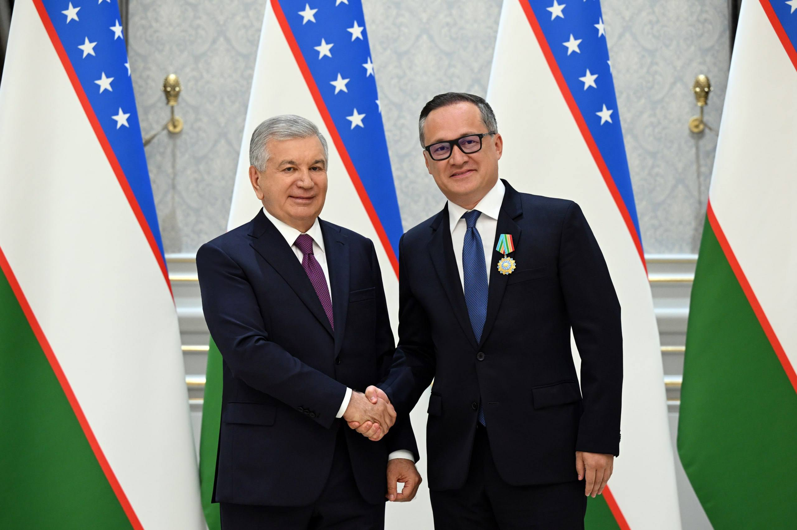

AQSh–O‘zbekiston savdosi $1 milliarddan oshdi: Vashington bitimlari va yangi investitsiyalar
2024-yilda ikki tomonlama savdo $881 million ni tashkil etdi (+15%), 2025-yilda esa $1 milliarddan oshdi. 6-noyabr 2025 kuni Vashingtonda Boeing, kritik minerallar va qishloq xo‘jaligi bo‘yicha bitimlar e’lon qilindi.

AQSh va O‘zbekiston o‘rtasidagi savdo va investitsiya aloqalari kengaymoqda. O‘zbekiston vaziri Laziz Qudratovga ko‘ra, 2024-yilda ikki tomonlama savdo $881 million ga yetgan — bu yildan yilga 15% o‘sish. Caspian Post ma’lumotiga ko‘ra, 2025-yilda savdo hajmi $1 milliarddan oshdi.
2024 savdo raqamlari
Vazir Laziz Qudratov keltirgan ma’lumotlarga ko‘ra, 2024-yilda O‘zbekiston eksporti $317 million ni tashkil etib, 25% ga oshgan, import esa $564 million ga yetib, 10% ga ko‘paygan. Umumiy savdo hajmi $881 million bo‘ldi.
Vashington bitimlari (6-noyabr 2025)
AQSh Davlat departamentining 2025-yil noyabr bayonotiga ko‘ra, 6-noyabr 2025 kuni Vashingtonda Donald Tramp va Shavkat Mirziyoyev uchrashuvida bir qator bitimlar e’lon qilindi.
- Boeing–Uzbekistan Airways: 22 tagacha Boeing 787 Dreamliner samolyotiga buyurtma, taxminan $8,5 milliard qiymatida; 35 000 dan ortiq AQSh ish o‘rnini qo‘llab-quvvatlashi kutilmoqda; yetkazib berish taxminan 2031-yildan boshlanadi (manbalar $8–8,5 mlrd oralig‘ida ko‘rsatadi).
- Kritik minerallar / kam uchraydigan yer elementlari: AQSh Davlat departamentiga ko‘ra, $400 milliongacha investitsiya kelishuvi (2025-yil noyabr).
- Qishloq xo‘jaligi: AQSh qishloq xo‘jaligi texnikasi uchun $2 milliardgacha majburiyat, shuningdek uch yil ichida 2 million tonna AQSh soyasi va 100 000 tonna AQSh paxtasi.
Mirziyoyevning kafolati
Ishonch bilan aytamanki, O‘zbekistonda faoliyat yuritayotgan AQSh kompaniyalari muvaffaqiyatini shaxsan kafolatlayman. Investitsiyalar vazirligida AQSh ishlari bo‘yicha alohida vazir o‘rinbosari tayinlandi. U sizni 24/7 kuzatib boradi.
— Shavkat Mirziyoyev, O‘zbekiston prezidenti (Vashington, 6-noyabr 2025)
300+ AQSh kompaniyasi
O‘zbekistonda hozirda 300 dan ortiq AQSh kompaniyasi faoliyat yuritmoqda — bu 2017-yildan beri ikki baravar ko‘paygan. Ular orasida GM, Boeing, Citi, JP Morgan, Cargill, Caterpillar, Honeywell, John Deere va Coca-Cola bor. 2025-yil 9-iyunda Toshkentda O‘zbekiston Investitsiyalar, sanoat va savdo vazirligi hamda AQSh Tijorat xizmati (US Commercial Service) o‘rtasida anglashuv memorandumi (MOU) imzolandi.
Miqyos: AQSh va Xitoy
AQSh bilan savdo o‘smoqda bo‘lsa-da, u Xitoy bilan savdodan ancha kichik. O‘zbek ma’lumotlariga ko‘ra, 2026-yil birinchi yarmida O‘zbekiston–Xitoy savdosi taxminan $7,7 milliard ni, Xitoy bojxona ma’lumotlariga ko‘ra esa $8,87 milliard ni tashkil etgan (yildan yilga +31%). AQSh Davlat departamenti doirasidagi C5+1 formati Markaziy Osiyo bilan jami $100 milliarddan ortiq savdo va investitsiyani nazarda tutadi.
Raqamlarda
- 2024 umumiy savdo: $881 million (+15%)
- Eksport: $317 million (+25%)
- Import: $564 million (+10%)
- 2025 umumiy savdo: $1 milliarddan ortiq
- Boeing: 22×787 Dreamliner, ~$8,5 mlrd, ~35 000 AQSh ish o‘rni
- Kritik minerallar: $400 milliongacha
- Qishloq xo‘jaligi texnikasi: $2 milliardgacha
- Soya: 2 million tonna; paxta: 100 000 tonna (3 yil)
- AQSh kompaniyalari: 300+ (2017-dan beri ikki baravar)
- Xitoy savdosi (H1 2026): $7,7–8,87 mlrd
- C5+1 rejasi: $100 mlrddan ortiq